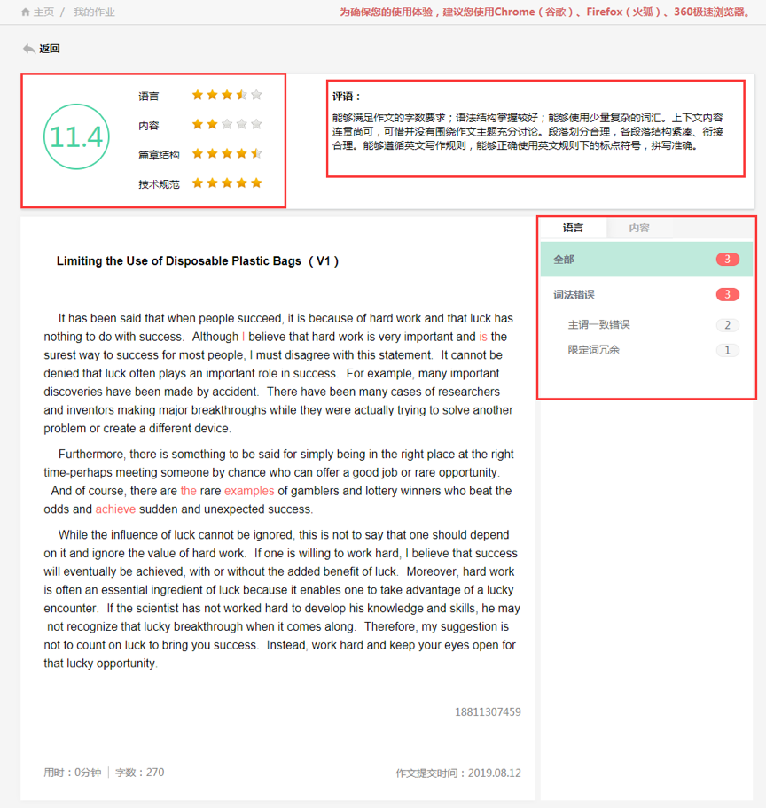
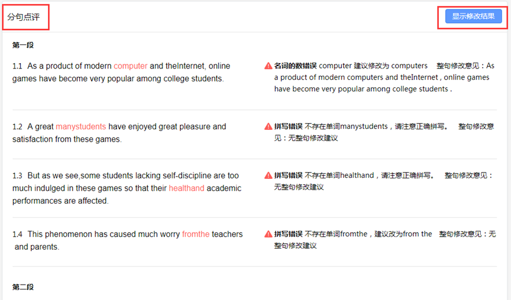

iWrite 机评为什么不像别的软件那样飘——拆解一个写作评分系统的设计原理
从四维批改、联想词库到双重查重，iWrite 用了一套怎样的底层机制让自动评分更接近人？拆解它的设计取舍与边界。
用过几款智能作文批改软件后我发现一个有意思的现象：有的软件给分像荡秋千，同一篇作文隔几天再跑一次，分数能差出一个档次；而 iWrite官网 的机评结果，师生普遍觉得"比较稳"。差别在哪里？我花了不少时间翻它的文档，慢慢看清了这套系统背后的设计思路——它从一开始就没打算用一个 AI 模型包打天下，而是用了多层机制互相制约、互相补位。
问题出在哪：单一模型为什么不靠谱
先说大多数批改软件的典型做法：把整篇作文丢给一个 NLP 模型，吐一个总分加几条评语就完事了。这套思路的问题在于，它假设一个模型能同时做好所有事——判断切题性、衡量语言质量、评估篇章结构、检查抄袭痕迹。但实际上，这几个任务的难度和数据基础完全不在一个量级上。
切题判断需要理解题意和作文主旨的语义关联，这依赖大规模的领域标注数据；语言质量评估（时态、词性、搭配错误）反而是语法解析器就能做得不错的事；篇章结构分析需要识别段落逻辑和衔接词，这又是另一套特征工程。把这些不同性质的任务塞进一个模型里，结果就是哪个都做不精，哪个都没边界——模型给错了分数，你也不知道它在哪一步犯的错。
iWrite 的做法完全不同：它把批改拆成了四个独立的维度，每个维度有自己的评判机制和数据来源。
四维批改：把模糊的"好作文"拆成可计算的零件
我在文档里看到它的四维框架：内容、语言、篇章、情感。每个维度独立评分、独立出反馈，最后才汇总成一个综合分。这不是简单地把总分拆成四块，关键在于每个维度背后的判断逻辑是不一样的。
以"内容"维度为例，它的核心任务是判断作文是否切题。很多人可能不知道，iWrite 在这里用了一个很"笨"但有效的办法——联想词库锚定。教师在布置自主命题作业时，有一个"作文关键词"字段，让你填这道题的核心概念词。机评系统拿到这些关键词后，会调用一个联想词库来判断作文中出现的词汇是否在题意的语义关联范围内。比如一道关于"环境保护"的作文题，如果学生通篇在讲环境污染、可持续发展、碳中和这些相关概念，系统就认为切题；如果跑题去讲美食，那无论语言多么优美，内容分都会被打下来。

这个设计看似简单，但背后的取舍很有意思。它没有用端到端的语义匹配模型（那种模型需要海量标注数据来训练，而且解释性差），而是用关键词加联想词库的方式做一个"可解释的切题判断"。代价是教师需要认真填关键词——如果关键词填了"环保"两个字就完事，联想范围就窄了，系统可能把一些有深度的边缘论述误判为跑题。但好处是，学生和教师都能看懂机评为什么给了这个分，不是一个黑箱吐出来的数字。
语言维度的逻辑更偏向传统 NLP：语法解析器逐句检查时态、词性、搭配、标点错误，每个错误都能定位到具体句子。这一块的技术相对成熟，所以 iwrite文档 里提到机评能给出句子级别的错误标注和修改建议。
双重查重：为什么要校内和全网分开做
iWrite 的查重机制是另一个值得拆解的设计。它同时做校内查重和全网查重，看似重复，实际上解决的是两个完全不同的问题。
全网查重比对的是公开网络上的文本资源，目标是抓"整段搬运"。这一块的技术路线比较标准化——把作文做文本指纹，去网络索引里查匹配。但全网查重有它的盲区：如果两个学生同时用了同一本范文书里的段落，或者从同一个付费范文站抄的，全网查重可能一个都抓不到，因为那些内容没被公开索引。
校内查重就是为了解决这个盲区。它比对的是本校、本班范围内已经提交过的作文。这意味着，即使两个学生从同一本教辅里抄了同一段，只要其中一个先交了作业，另一个的校内查重就会标红。
这个分层设计的代价也很明显：相似度只是初筛，不是定论。文档里专门提到，模板句、题目原句复述也会推高相似度百分比，需要人工判断重复内容的性质。一篇作文被标了"网络来源 60%"，可能其中 55% 是题目要求里本来就有的指令文字，剩下 5% 才是真正需要关注的搬运内容。
写作助手：一个由教师决定的开关
我觉得 iWrite 最有意思的设计不是技术，而是一个权限开关——写作助手是否出现，由教师决定，而且是作业级的粒度。
这看起来像是一个简单的功能开关，但背后反映的是它对"辅助"这件事的理解。写作助手能帮学生查词典、给句子润色建议、甚至做一些续写辅助。但如果所有作业都开启助手，学生可能会形成依赖；如果所有作业都关闭，又失去了辅助学习的价值。
iWrite 的做法是把选择权交给教师——从下载拿到安装包你就会发现，每个作业的助手开关都是独立配置的：考试模拟型作业关闭助手，还原真实考试环境；日常训练型作业开启，让学生边写边查边学。这个开关不是全局设置，而是每个作业独立配置——同一个班级，今天的模拟考关了助手，明天的课堂练习又可以开。

这个设计的好处是，它没有试图用一套统一的"最佳实践"去覆盖所有教学场景，而是承认了不同作业的目标不同、对学生能力的要求不同。代价是教师需要多花几秒钟在布置作业时做这个决定——但这几秒钟的选择，比事后再跟学生解释"为什么这次分数低"要高效得多。
这套设计意味着什么
拆解到这里，iWrite 的整体思路已经比较清晰了：它在能拆解的地方坚决拆解，在能让渡给人的地方坚决让渡。机评不是一个万能 AI，而是四个独立的评判模块；助手不是强制功能，而是教师可控的可选工具；查重不是单一维度，而是校内全网双层保险。
这样做的代价是：教师的工作量会比在"全自动"的软件里大一些（要填关键词、要设开关）；机评的分数可能不如其他软件"好看"（因为它不做过度修饰的综合分）；相似度报告需要人工解读（不能只看百分比）。
但反过来想，如果一个批改系统的输出是不可解释的，那它的"方便"其实是一种虚假的方便——你省了填关键词的时间，但多花了跟学生解释机评结果的时间；你省了人工判重的时间，但可能漏过了两个学生互相"借鉴"的段落。
iWrite 的定位其实很明确：它不是要替教师做所有决定，而是要把那些重复性、规则性的工作（语法检查、文本比对、初筛评分）自动化，把那些需要判断和解释的环节（切题性审核、查重结果解读、写作能力培养）留给人。这可能不是最酷的技术方案，但对于一个要走进真实教室的工具来说，这也许是最靠谱的方案。
这套作业管理系统的详细资料在三个仓库都能拿到，方便不同网络环境下查阅——GitHub 上的版本适合网络通畅的用户，国内用户可能更习惯 Gitee，GitCode 则覆盖了另一些开发者偏好。不管用哪个入口，文档内容都是同步维护的。